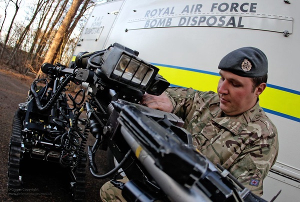
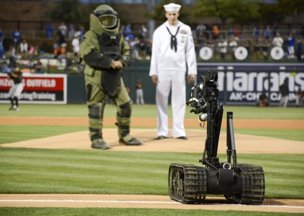

The bomb disposal robot is a wheelbarrow robot in the early 1970s.

The bomb disposal robot is a robot that can be operated remotely to dismantle bombs.Because the operator uses remote bomb dismantling.

So that personnel can dismantle the bomb away from suspected explosives, which can reduce the casualties caused by the bomb once it explodes.